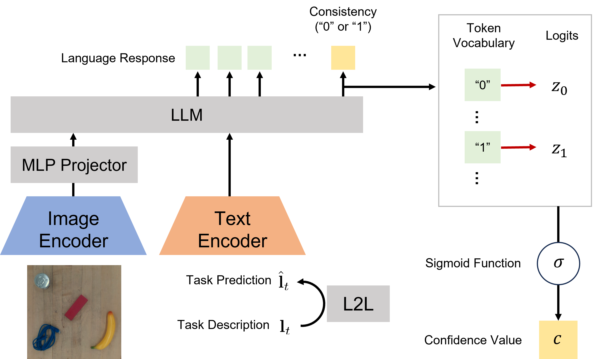

LACY (Language-Action CYcle) enables bidirectional grounding between language and action for robotic manipulation through a self-improving loop of three tasks: language-to-action (L2A), action-to-language explanation (A2L), and language-consistency verification (L2C).
Absolute and relative spatial reasoning: The robot understands the both the absolute location of the object and the relative spatial relationship between the target object and the reference object, successfully executing the pick-and-place task.
Relative spatial reasoning: The robot understands the spatial relationship between the target object and the reference object and successfully executes the pick-and-place task.
Absolute spatial reasoning: The robot understands the absolute spatial semantics of the target object on the workspace and successfully executes the pick-and-place task.

Overview of the LACY framework: LACY builds upon a single VLM fine-tuned to serve three roles: (1) an action generator (L2A), (2) an action explainer (A2L), and (3) a consistency verifier (L2C). The framework operates as a closed-loop system, where these bidirectional capabilities enable LACY to generate new high-quality training data and iteratively refine itself. (4) Each task is framed as a chain-of-thought (CoT) process, where the model first performs object grounding to predict object names and locations and then uses this contextual information to complete the target task. (5) We sample the new sampled dataset which can be added to the initial dataset.
{kind=link}
Language to Action, Action to Language: We argue that learning the A2L approach deepens understanding of robot tasks, and this can maximize learning efficiency from limited in-domain demonstrations through bidirectional grounding.
{kind=link}
Language Consistency Verification (L2C): LACY leverages the L2C task to autonomously filter and curate high-quality training data from the L2A and A2L outputs, ensuring that only samples with consistent language-action pairs are retained for further training. This self-supervisory mechanism enhances the model's robustness and generalization capabilities. 
{kind=link}
L2C Pipeline: The L2C (Language-to-Consistency) verifier assesses semantic alignment between input and reconstructed language pairs. Instead of relying on discrete model outputs, LACY extracts the logits of the “0” / “1” tokens at the final decoding step and converts their difference into a calibrated confidence value via a sigmoid function. This score determines whether newly generated samples are retained during the model's self-training cycle.
Failure Cases: In most cases, the picking action has assigned the correct object, but the picking location is at the boundary of the object, the object tends to be out of graspable range.